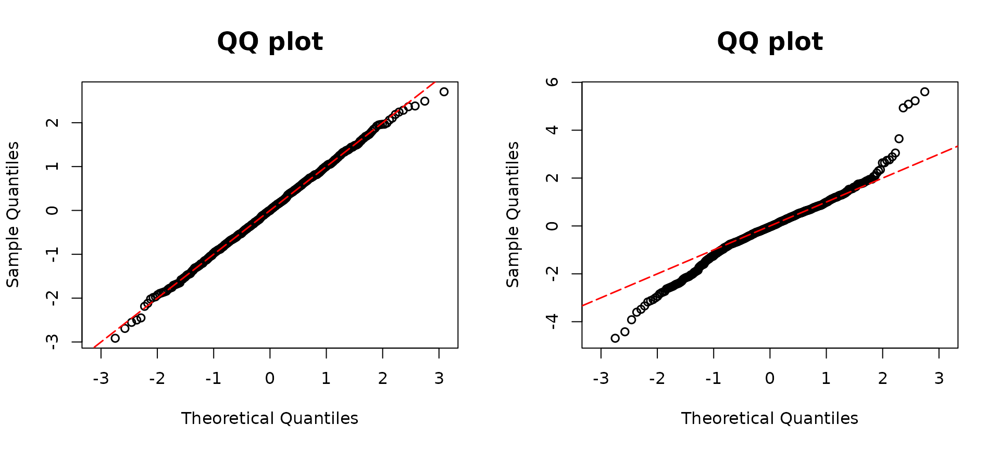

Zero-Inflation regression models
resid_zeroinfl() is used for calculating the DPIT
residuals for regression models with zero-inflation outcomes and drawing
corresponding QQ-plots. The suitable model objects are as follows:
- Zero-Inflated Poisson,
pscl::zeroinfl(dist = "poisson") - Zero-Inflated negative binomial,
pscl::zeroinfl(dist = "negbin")
We simulate data using a zero-inflated Poisson model. The probability of excess zeros is modeled with \(\mathrm{logit}(p_0) = \beta_{00} + \beta_{10}X_1\), and the Poisson component has a mean \(\lambda = \exp(\beta_0 +\beta_1X_1 +\beta_2X_2)\), where \(X_1 \sim N(0,1)\) and \(X_2\) is a dummy variable with a probability of 1 equal to 0.7, and \(( \beta_{00} ,\beta_{10}, \beta_0, \beta_1, \beta_2) = (-2, 2, -2, 2, 1)\).
## Zero-Inflated Poisson
library(assessor)
library(pscl)
n <- 500
set.seed(1234)
# Covariates
x1 <- rnorm(n)
x2 <- rbinom(n, 1, 0.7)
# Coefficients
beta0 <- -2
beta1 <- 2
beta2 <- 1
beta00 <- -2
beta10 <- 2
# Mean of Poisson part
lambda1 <- exp(beta0 + beta1 * x1 + beta2 * x2)
# Excess zero probability
p0 <- 1 / (1 + exp(-(beta00 + beta10 * x1)))
## simulate outcomes
y0 <- rbinom(n, size = 1, prob = 1 - p0)
y1 <- rpois(n, lambda1)
y <- ifelse(y0 == 0, 0, y1)
par(mfrow=c(1,2))
## True model
modelzero1 <- zeroinfl(y ~ x1 + x2 | x1, dist = "poisson", link = "logit")
resid1 <- resid_zeroinfl(modelzero1, plot = TRUE, scale = "uniform")
## Zero inflation
modelzero2 <- glm(y ~ x1 + x2, family = poisson(link = "log"))
resid2 <- resid_disc(modelzero2, plot = TRUE, scale = "normal")
The figure above illustrates QQ plots corresponding to
modelzero1 and modelzero2. Given that the true
underlying distribution of y follows a zero-inflated
Poisson distribution, we anticipate observing deviations from the
diagonal line in the QQ plot of modelzero2. As expected,
the left QQ plot aligns closely along the diagonal line. However, in the
right panel, both the left and right tails of the QQ plot for
modelzero2 deviate from the diagonal line, indicating that
the assumption of a Poisson distribution may not be accurate. Moreover,
a noticeable S-shaped pattern arises due to overdispersion. The
discrepancies observed in the QQ plot of modelzero2 suggest
that the Poisson distribution assumption is not well-supported by the
data. This finding emphasizes the importance of considering alternative
distributional assumptions, such as the zero-inflated Poisson
distribution, which may better capture the characteristics of the
simulated data.
## Zero-inflated Negative Binomial
library(assessor)
library(pscl)
library(MASS)
n <- 500
set.seed(1234)
# Covariates
x1 <- rnorm(n)
x2 <- rbinom(n, 1, 0.7)
# Coefficients
beta0 <- -2
beta1 <- 2
beta2 <- 1
beta00 <- -2
beta10 <- 2
size1 <- 2
# Mean of Poisson part
lambda1 <- exp(beta0 + beta1 * x1 + beta2 * x2)
# Excess zero probability
p0 <- 1 / (1 + exp(-(beta00 + beta10 * x1)))
## simulate outcomes
y0 <- rbinom(n, size = 1, prob = 1 - p0)
y1 <- rnbinom(n, size=size1, mu= lambda1)
y <- ifelse(y0 == 0, 0, y1)Similarly, we generate a zero-inflated negative binomial random
variable denoted as y, which is dependent on the variables
x1 and x2. The simulation involves modeling
the occurrence of zeros in the variable y through a
zero-inflated negative binomial distribution.
model.negbin1 <- zeroinfl(y ~ x1 + x2 | x1, dist = "negbin")
model.negbin2 <- glm.nb(y ~ x1 + x2)
par(mfrow=c(1,2))
resid.zero1 <- resid_zeroinfl(model.negbin1, plot = TRUE, scale = "uniform")
resid.zero2 <- resid_disc(model.negbin2, plot = TRUE, scale = "normal")
The figure also presents QQ plots corresponding to
model.negbin1 and model.negbin2. In contrast
to our simulation setting, model.negbin2 assumes a negative
binomial distribution rather than a zero-inflated negative binomial
distribution. Consequently, the right panel of the figure displays
deviations at both the left and right tails. While these deviations may
not be substantial, a comparison with the left panel suggests that the
QQ plots lean towards supporting the zero-inflated negative binomial
regression.